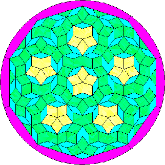

WelcomeThis is my home page, where I dump everything that I can think off. Some of the contents are in Spanish, those are listed in the other column. ChinaDuring September 1996, I had a wonderful 2 week trip to China. EvitaSince I am from Argentina, some people asked me about Evita, after watching the movie (which I have not seen yet). I decided that I might as well place my reply here. Old Stories about ComputersI've been working with computers for more than 20 years (I wrote that around the year 2000 so, it is close to 35 something now in 2014. Keep counting!). I had a good laugh with a good friend of mine recalling what we did in those days. I've put together some of this old stories about old computers. Babbage's Difference EngineTalking about old computers, here is the grandmother of them all, Charles Babbage's Difference Engine, which actually was an automatic calculator and just one step below his Analytical Engine a true computer as we now understand them; neither one ever built. Yahoo User Interface Library (YUI)I've been contributing to this open-source project for quite a while and I wrote some examples showing how to use the library and some articles about it and, most recently, I wrote a book about it: YUI 2.8: Learning the Library. Spanish for English SpeakersSpanish is a phonetic language with very few exceptions. Here are the most basic rules.
My e-mail is: satyam@satyam.com.ar |
 |
BienvenidosEsta es mi página de WEB, donde vuelco todo lo que se me ocurre. Parte de su contenido está en inglés y está listado en la otra columna. BlogNotas, comentarios, fotos y artículos. ConectándonosTambién mantengo las páginas de web de Conectándonos, un boletín para comunicar los amigos y amantes de habla hispana del Maestro Osho. MitosRecientemente me dediqué a romper mitos, a ejercer mi escepticismo a todo trapo. El resultado de algunos de esos intentos se encuentra aquí Simulador de VueloLa locura más reciente (no la última sino apenas la más fresquita) ha sido ponerme a jugar con el Flight Simulator de mi hijo y ponerme a hacer turismo. Para que puedan seguir algunos de los recorridos, he preparado una sección con algunos recorridos. También enseña como utilizar el piloto automático. Máquina de Diferencias de BabbageLa Máquina de Diferencias de Charles Babbage es quizás la antecesora de las computadoras actuales. En realidad, una calculadora automática, está apenas un escalón por debajo de la Máquina Analítica, que podríamos considerar una computadora real. Babbage nunca terminó de construír ninguna de ellas. Milagros CotidianosUna colección de anécdotas, pequeños milagros, para no olvidarme de las pequeñas cosas que la vida me ha dado. Nuevo RetiroIdeas tomadas del transporte público de Madrid y Barcelona que podrían ser aplicadas en Buenos Aires.
Mi correo es :satyam@satyam.com.ar |
|
The design above is based on Roger Penrose tiling pattern. This
simple design was thought to be impossible to exist, and thus was
not even explored by mathematicians who, amongst their very strange
interests, lies the filling of surfaces with repeating patterns,
that is, tiling.
It is obvious how to fill a surface with triangular, square or hexagonal tiles, and several others derived from them and their combination. The tiling pattern on a five axis symmetry was thought impossible to do with a limited number of tiles. Penrose showed that, indeed, it is possible with just two diamond shaped tile patterns (there are other shapes derived from these). It is still thought to be impossible to do with pentagonal tiles, unless you use an inordinate number of extra shapes to fill in the holes. Note, after all, that though the symmetry is five sided, the tiles themselves are four sided. This particular figure is composed of yellow and green tiles which are actually of the same shape and blue ones which are the second shape. The red border is just to frame it. There are some green tiles cut in half on the border, and this was made just to make the frame fit, but this design can actually go forever with just the two basic tiles. |
La figura de más arriba está basada en los mosaicos de Roger
Penrose. Se había creído que este diseño no podría existir y nunca
había sido explorado por los matemáticos que, entre sus muy variados
y extraños intereses está el llenado de superficies con figuras
repetidas, esto es, hacer mosaicos.
Es obvio cómo llenar una superficie con tejas triangulares, cuadradas o hexagonales, y varios otros derivados de ellos y sus combinaciones. No se pensó que existiera un mosaico con cinco ejes de simetría, que pudiera hacerse con un número finito de tejas. Penrose mostró que, efectivamente, es posible hacerlo con sólo dos figuras en forma de rombo. (existen otras figuras derivadas de estas mismas). Aún se cree imposible el uso de mosaicos pentagonales a menos que se los complemente con una buena cantidad de otras figuras para completar los huecos. Nótese que, a pesar que la simetría de la figura completa es de 5 ejes, los mosaicos en si son cuadriláteros. Esta figura en particular está compuesta de tejas amarillas y verdes, que son exactamente iguales, y tejas azules que son el segundo tipo de mosaico. El borde rojo es simplemente un marco. Sobre el borde, hay algunas tejas verdes cortadas a la mitad para que el marco cerrara mejor, pero este diseño, en realidad, puede seguir eternamente con los dos tipos de tejas solamente. |